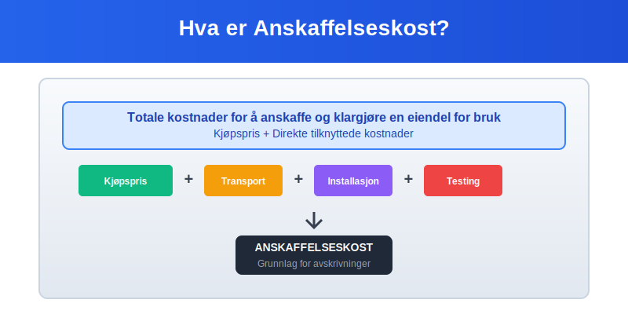
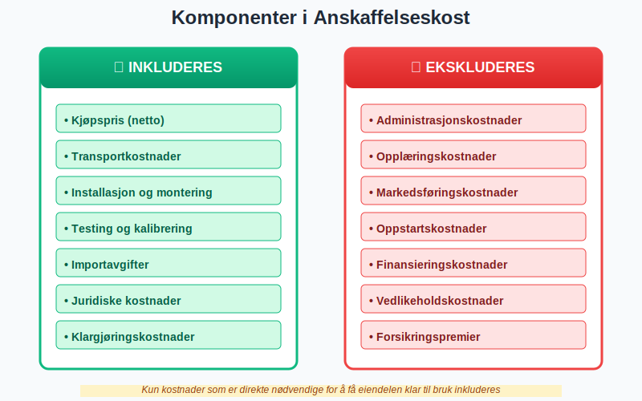
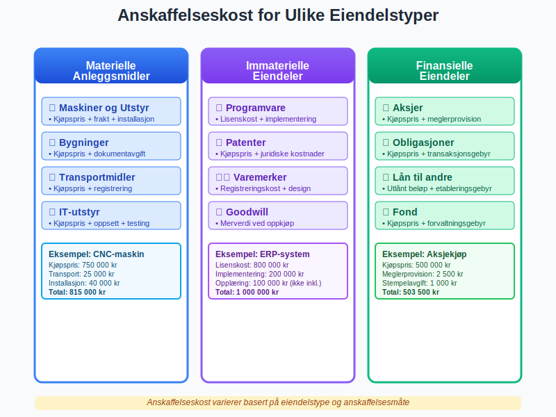
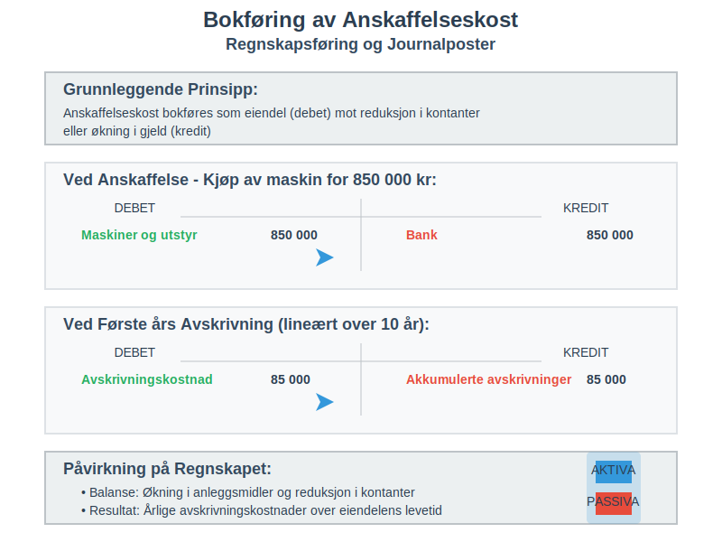
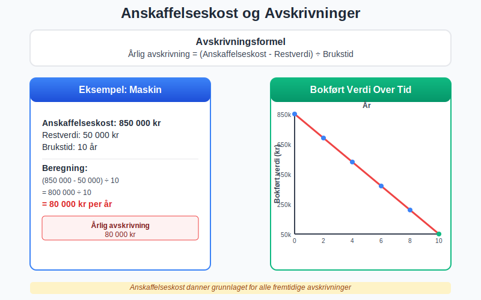
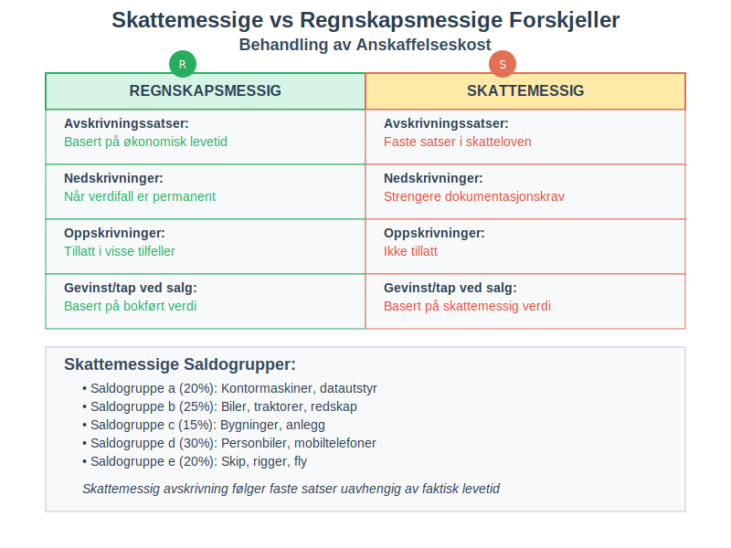
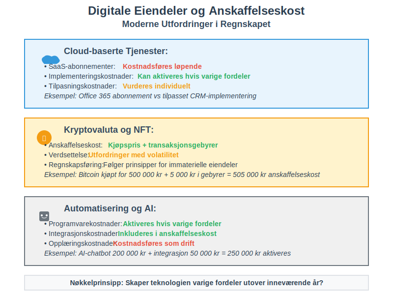
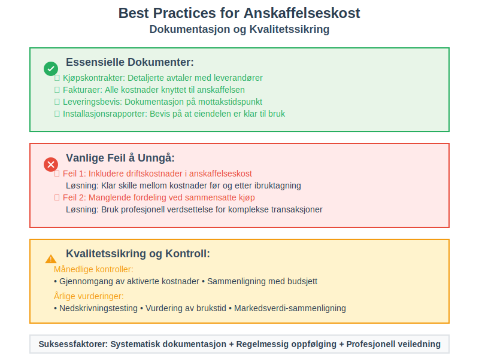

Anskaffelseskost er det totale beløpet en bedrift betaler for å anskaffe og klargjøre en eiendel for bruk. Dette inkluderer ikke bare kjøpsprisen, men også alle direkte kostnader som er nødvendige for å få eiendelen klar til sitt tiltenkte formål. Anskaffelseskost danner grunnlaget for verdsettelse av aktiva og er avgjørende for korrekt beregning av avskrivninger og amortisering.
For nærmere forklaring av det skattemessige kostprisbegrepet «inngangsverdi», se Inngangsverdi.
Anskaffelseskost er en del av det bredere kostnadsbegrepet kostpris, som omfatter alle kostnader knyttet til anskaffelse, produksjon og levering av varer og tjenester.

Seksjon 1: Definisjon og Grunnleggende Prinsipper
1.1 Hva Inngår i Anskaffelseskost?
Anskaffelseskost består av alle kostnader som er direkte henførbare til anskaffelsen og klargjøringen av eiendelen. Dette følger det grunnleggende regnskapsprinsippet om at alle kostnader som er nødvendige for å få en eiendel klar til bruk, skal aktiveres i balansen som aktivering.

1.2 Hovedkomponenter i Anskaffelseskost
- Kjøpspris: Det faktiske beløpet betalt til selger
- Importavgifter og ikke-refunderbare skatter: MVA som ikke kan trekkes fra
- Transportkostnader: Frakt og leveringskostnader (dokumentert med fraktbrev)
- Installasjonskostnader: Montering og oppstilling
- Profesjonelle tjenester: Advokat-, revisor- og konsulenthonorar
- Testingskostnader: Kostnader for å teste at eiendelen fungerer korrekt
- Klargjøringskostnader: Modifikasjoner for å tilpasse eiendelen til bruk
1.3 Hva som IKKE Inngår i Anskaffelseskost
Enkelte kostnader skal ikke inkluderes i anskaffelseskost, men kostnadsføres direkte:
- Administrasjonskostnader: Generelle overhead-kostnader
- Opplæringskostnader: Kurs for ansatte i bruk av eiendelen
- Markedsføringskostnader: Kostnader for å markedsføre produkter laget med eiendelen
- Oppstartskostnader: Kostnader i oppstartsfasen av drift
- Finansieringskostnader: Renter på lån (med visse unntak)
Seksjon 2: Anskaffelseskost for Ulike Eiendelstyper
Beregningen av anskaffelseskost varierer avhengig av type eiendel og hvordan den anskaffes.

2.1 Materielle Anleggsmidler
For materielle anleggsmidler er korrekt beregning av anskaffelseskost særlig viktig siden dette danner grunnlaget for avskrivninger over eiendelens levetid.
Maskiner og Utstyr
For maskiner og produksjonsutstyr inkluderer anskaffelseskost typisk:
| Kostnadselement | Eksempel | Inkluderes |
|---|---|---|
| Kjøpspris | 500 000 kr | ✓ |
| Frakt | 15 000 kr | ✓ |
| Installasjon | 25 000 kr | ✓ |
| Testing | 10 000 kr | ✓ |
| Opplæring | 20 000 kr | ✗ |
| Total anskaffelseskost | 550 000 kr |
Bygninger og Eiendom
Ved kjøp av bygninger må følgende vurderes:
- Kjøpspris for tomt og bygning: Må fordeles mellom ikke-avskrivbar tomt og avskrivbar bygning
- Dokumentavgift: 2,5% av kjøpesummen (aktiveres)
- Tinglysingsgebyr: Aktiveres som del av anskaffelseskost
- Meglerhonorarer: Aktiveres hvis direkte knyttet til kjøpet
- Advokatkostnader: Aktiveres for juridisk bistand ved kjøp
2.2 Immaterielle Eiendeler
For immaterielle eiendeler som patenter, programvare og lisenser:
Kjøpte Immaterielle Eiendeler
- Kjøpspris: Beløp betalt til selger
- Juridiske kostnader: For registrering og overføring
- Konsulenthonorar: For due diligence og verdsettelse
Egenutviklede Immaterielle Eiendeler
- Direkte lønnskostnader: For utviklingsteam
- Direkte materialkostnader: Spesialisert programvare og utstyr
- Allokerte overhead-kostnader: Kun direkte henførbare kostnader
For detaljert informasjon om aktivering av egenutviklede immaterielle eiendeler, se konto 1000 - Forskning og utvikling.
2.3 Finansielle Eiendeler
For investeringer i aksjer og obligasjoner:
- Kjøpspris: Markedspris på kjøpstidspunkt
- Meglerprovisjoner: Kostnader for handel
- Stempelavgifter: Offentlige avgifter ved handel
- Ikke inkludert: Påløpte renter (regnskapsføres separat)
Seksjon 3: Beregning og Praktiske Eksempler
3.1 Detaljert Beregningseksempel: Produksjonsmaskin
La oss se på et komplett eksempel for anskaffelse av en produksjonsmaskin:

Scenario: Et produksjonsselskap kjøper en ny CNC-maskin.
Kostnadsoppstilling:
| Kostnadselement | Beløp (NOK) | Kommentar |
|---|---|---|
| Grunnpris maskin | 800 000 | Listepris fra leverandør |
| Rabatt | -50 000 | Forhandlet prisavslag |
| Netto kjøpspris | 750 000 | |
| Transport fra Tyskland | 25 000 | Spesialtransport (dokumentert med fraktbrev) |
| Importavgift | 15 000 | 2% av importverdi |
| Installasjon og montering | 40 000 | Teknisk personell |
| Elektrisk tilkobling | 12 000 | Ny strømforsyning |
| Testing og kalibrering | 8 000 | Kvalitetssikring |
| Total anskaffelseskost | 850 000 |
Kostnader som IKKE aktiveres:
- Opplæring av operatører: 30 000 kr (kostnadsføres)
- Forsikring første år: 15 000 kr (kostnadsføres)
- Vedlikeholdskontrakt: 25 000 kr (kostnadsføres)
3.2 Sammensatt Anskaffelse: Eiendomskjøp
Ved kjøp av næringseiendom må anskaffelseskost fordeles mellom tomt og bygning:
Kjøpsdetaljer:
- Total kjøpesum: 5 000 000 kr
- Takst tomt: 1 500 000 kr
- Takst bygning: 3 500 000 kr
Fordeling av anskaffelseskost:
| Element | Beregning | Beløp |
|---|---|---|
| Tomt (30%) | 5 000 000 × (1 500 000 ÷ 5 000 000) | 1 500 000 |
| Bygning (70%) | 5 000 000 × (3 500 000 ÷ 5 000 000) | 3 500 000 |
| Dokumentavgift (2,5%) | 5 000 000 × 2,5% | 125 000 |
| Tinglysing | Fast sats | 2 000 |
| Advokat | Faktiske kostnader | 15 000 |
| Total aktivert | 5 142 000 |
Fordeling for avskrivningsformål:
- Tomt (ikke avskrivbar): 1 531 250 kr
- Bygning (avskrivbar): 3 610 750 kr
Seksjon 4: Regnskapsføring og Bokføring
4.1 Grunnleggende Bokføringsprinsipper
Anskaffelseskost bokføres som en eiendel (debet) mot reduksjon i kontanter eller økning i gjeld (kredit).

Eksempel: Kjøp av maskin for 850 000 kr
Ved anskaffelse:
Debet: Maskiner og utstyr 850 000
Kredit: Bank 850 000
Ved første års avskrivning (lineært over 10 år):
Debet: Avskrivningskostnad 85 000
Kredit: Akkumulerte avskrivninger 85 000
4.2 Spesielle Situasjoner
Bytte av Eiendeler
Ved bytte av eiendeler må anskaffelseskost for ny eiendel beregnes basert på virkelig verdi:
- Kommersiell substans: Ny eiendel verdsettes til virkelig verdi
- Ingen kommersiell substans: Ny eiendel verdsettes til bokført verdi av gammel eiendel
Egentilvirkning
For egentilvirkede eiendeler inkluderes kun kostnader frem til eiendelen er klar til bruk:
- Direkte materialkostnader
- Direkte lønnskostnader
- Direkte henførbare indirekte kostnader
Seksjon 5: Påvirkning på Avskrivninger og Amortisering
5.1 Avskrivningsgrunnlag
Anskaffelseskost danner grunnlaget for beregning av avskrivninger over eiendelens brukstid.

Avskrivningsformel:
Årlig avskrivning = (Anskaffelseskost - Restverdi) ÷ Brukstid
Eksempel med ulike avskrivningsmetoder:
| Metode | År 1 | År 2 | År 3 | År 4 | År 5 |
|---|---|---|---|---|---|
| Lineær (20%) | 170 000 | 170 000 | 170 000 | 170 000 | 170 000 |
| Saldometode (30%) | 255 000 | 178 500 | 124 950 | 87 465 | 61 226 |
Basert på anskaffelseskost 850 000 kr, 5 års brukstid, ingen restverdi
5.2 Nedskrivninger
Hvis eiendelens verdi faller permanent under bokført verdi, må den skrives ned:
Nedskrivning = Bokført verdi - Gjenvinnbart beløp
Regnskapsføring av nedskrivning:
Debet: Nedskrivningskostnad 100 000
Kredit: Akkumulerte nedskrivninger 100 000
Seksjon 6: Skattemessige Konsekvenser
6.1 Skattemessig vs Regnskapsmessig Behandling
Skattemessig behandling av anskaffelseskost kan avvike fra regnskapsmessig behandling:

Hovedforskjeller:
| Aspekt | Regnskapsmessig | Skattemessig |
|---|---|---|
| Avskrivningssatser | Økonomisk levetid | Faste satser i skatteloven |
| Nedskrivninger | Når verdifall er permanent | Strengere krav til dokumentasjon |
| Oppskrivninger | Tillatt i visse tilfeller | Ikke tillatt |
| Gevinst/tap ved salg | Basert på bokført verdi | Basert på skattemessig verdi |
6.2 Saldogrupper for Avskrivning
Skattemessig fordeles eiendeler i ulike saldogrupper med faste avskrivningssatser:
- Saldogruppe a (20%): Kontormaskiner, datautstyr
- Saldogruppe b (25%): Biler, traktorer, redskap
- Saldogruppe c (15%): Bygninger, anlegg
- Saldogruppe d (30%): Personbiler, mobiltelefoner
- Saldogruppe e (20%): Skip, rigger, fly
Seksjon 7: Internasjonale Regnskapsstandarder
7.1 IFRS vs NGRS
Behandling av anskaffelseskost under internasjonale standarder:

Hovedlikheter:
- Grunnleggende definisjon er lik
- Inkludering av direkte kostnader følger samme prinsipper
- Aktivering vs kostnadsføring har samme logikk
Hovedforskjeller:
- Lånerenter: IFRS tillater aktivering under visse betingelser
- Oppskrivninger: IFRS tillater oppskrivning til virkelig verdi
- Komponentavskrivning: IFRS krever mer detaljert opdeling
7.2 Praktiske Implikasjoner
For norske selskaper som rapporterer etter IFRS:
- Konsernregnskap: Ofte IFRS
- Selskapsregnskap: Norske regnskapsstandarder
- Forskjellsanalyse: Må dokumenteres i noter
Seksjon 8: Digitalisering og Moderne Utfordringer
8.1 Digitale Eiendeler
Moderne forretningsdrift skaper nye utfordringer for anskaffelseskost:

Cloud-baserte Tjenester:
- SaaS-abonnementer: Kostnadsføres løpende
- Implementeringskostnader: Kan aktiveres hvis de skaper varige fordeler
- Tilpasningskostnader: Vurderes individuelt
Kryptovaluta og NFT:
- Anskaffelseskost: Inkluderer kjøpspris og transaksjonsgebyrer
- Verdsettelse: Utfordringer med volatilitet
- Regnskapsføring: Følger prinsipper for immaterielle eiendeler
8.2 Automatisering og AI
Investering i automatisering og kunstig intelligens:
- Programvarekostnader: Aktiveres hvis de skaper varige fordeler
- Integrasjonskostnader: Inkluderes i anskaffelseskost
- Opplæringskostnader: Kostnadsføres som driftskostnader
Seksjon 9: Praktiske Tips og Best Practices
9.1 Dokumentasjon og Sporbarhet
For korrekt håndtering av anskaffelseskost:

Essensielle Dokumenter:
- Kjøpskontrakter: Detaljerte avtaler med leverandører
- Fakturaer: Alle kostnader knyttet til anskaffelsen
- Leveringsbevis: Dokumentasjon på når eiendelen ble mottatt
- Installasjonsrapporter: Bevis på at eiendelen er klar til bruk
- Testresultater: Kvalitetssikring og funksjonalitet
9.2 Vanlige Feil og Hvordan Unngå Dem
Feil 1: Inkludering av Driftskostnader
Problem: Blande anskaffelseskost med løpende driftskostnader Løsning: Klar skille mellom kostnader før og etter ibruktagning
Feil 2: Manglende Fordeling ved Sammensatte Kjøp
Problem: Ikke fordele kostnad mellom ulike eiendeler Løsning: Bruk profesjonell verdsettelse for komplekse transaksjoner
Feil 3: Feil Behandling av Finansieringskostnader
Problem: Aktivere renter som ikke kvalifiserer Løsning: Følg strenge kriterier for aktivering av lånerenter
9.3 Kvalitetssikring og Kontroll
Månedlige Kontroller:
- Gjennomgang av aktiverte kostnader
- Sammenligning med budsjett
- Vurdering av klassifisering
Årlige Vurderinger:
- Nedskrivningstesting
- Vurdering av brukstid
- Sammenligning med markedsverdier
Konklusjon
Anskaffelseskost er et fundamentalt konsept i regnskapet som påvirker både balanse og resultatregnskap over mange år. Korrekt beregning og regnskapsføring av anskaffelseskost er avgjørende for:
- Riktig verdsettelse av eiendeler i balansen
- Korrekte avskrivninger over eiendelens levetid
- Skattemessig compliance og optimalisering
- Informative finansielle rapporter for interessenter
Ved å følge etablerte prinsipper og best practices sikrer bedrifter at deres aktiva verdsettes korrekt og at avskrivninger og amortisering beregnes på et solid grunnlag.
For komplekse transaksjoner eller spesielle eiendelstyper anbefales det å konsultere regnskapseksperter for å sikre korrekt behandling i henhold til gjeldende regnskapsstandarder og skattelovgivning.